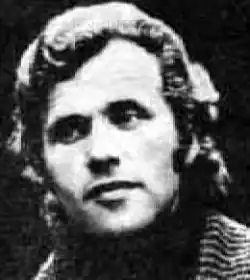

КОРДУН Віктор Максимович народився 20 серпня 1946 р. в с. Васиковичі Коростенського р-ну Житомирської обл.
Дебютував 1967 р. на сторінках "Літературної України", після чого відразу ж був заборонений до друку. Вчився в Київсьому університеті, з якого був виключений, потрапивши до списку політично неблагонадійних. Згодом закінчив Київський інститут театрального мистецтва. Ім'я поета знову з'явилося у пресі аж на початку 80-х рр. Автор збірок: "Земля натхненна" (1984), "Пісеньки з маминого напрестка" (1985), "Славія" (1987), "Кущ вогню" (1990), "Сонцестояння" (1992). Видавалися книги в перекладі німецькою мовою — "Kryptogramme" (1996) та "Weisse Psalmen" (1999), а окремі збірки — багатьма мовами світу.
Лауреат премій ім. П.Тичини та ім. В.Сосюри, а також премії Міжнародної фундації Антоновичів (США). Нині заступник голови НСПУ, голова комісі по роботі з творчою молоддю; редагує і видає журнал "Світо-вид".